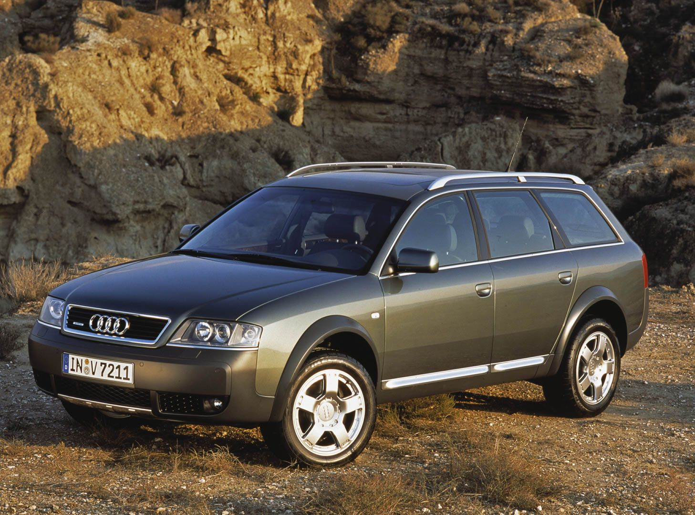
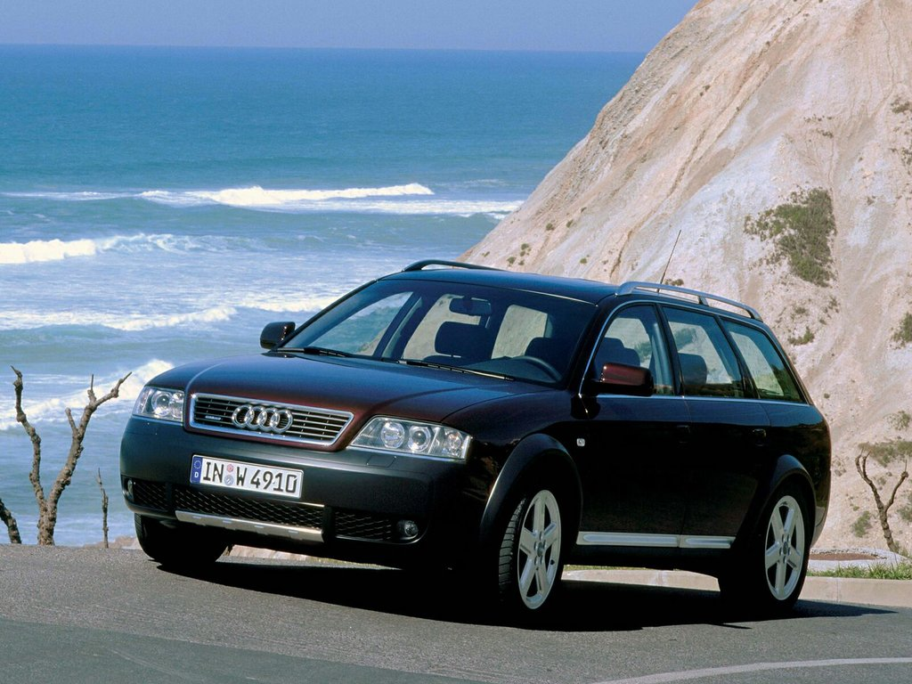

Дата выпуска:(2000-2006)
Характеристика автомобиля
обьём двигателя:2.5 Литра
Топлива:ДТ
Лошадиные силы:163л.c
Привод:Полно приводная
Коробка: Механическая
разгон от 0-до 100:10,4 с
Расход:8.7Л
Тип двигателя:дизельный
Расположение двигателя:переднее, продольное
Объем двигателя, см³2496
Тип наддува турбонаддув
Максимальная мощность, л.с./кВт при об/мин163/120 при 4000
Максимальный крутящий момент, Н*м при об/мин310 при 1400
Расположение цилиндровV-образное
Количество цилиндров:6
Число клапанов на цилиндр:4
Степень сжатия18.5
Диаметр цилиндра и ход поршня, мм78.3x86.4
Тип передней подвескинезависимая, пневмоэлемент
Тип задней подвескинезависимая, пневмоэлемент
Передние тормозадисковые вентилируемые
Задние тормозадисковые
Второе поколение Audi A6 дебютировало весной 1997 г. (несмотря на это модельный год уже 1998, так как предыдущее поколение выпускалось параллельно). Оно базировалось на новой платформе C5, кузов имел заводское обозначение 4B. Второе поколение Audi A6 выпускалось в кузовах седан и универсал (Avant), на его же базе был разработан впоследствии Audi A6 Allroad quattro.
Новый стиль автомобиля стал «фирменным лицом» всей линейки автомобилей Audi. Новый кузов заслужил лестные отзывы за свой дизайн, который и по сей день не выглядит устаревшим, и позволил Audi A6 иметь очень низкий для автомобилей своего класса коэффициент лобового сопротивления 0,28. Всё это позволило конкурировать A6 с лидерами в своём классе BMW 5-Series и Mercedes-Benz E-Class, а журнал Car and Driver включал Audi A6 в десятку лучших автомобилей в 2000 и 2001 годах
Также выпускались спортивные модификации автомобиля A6 — Audi S6 с двигателем 4.2 л., а также была более мощная модификация Audi RS6 с двигателем 4.2 л. с двумя турбонагнетателями мощностью 450 л. с., была выпущена и ограниченная серия Audi RS6 plus с двигателем 4.2 л. также с двумя турбонагнетателями со слегка увеличенной мощностью 480 л. с., модификация RS6 plus была доступна только в кузове «универсал».